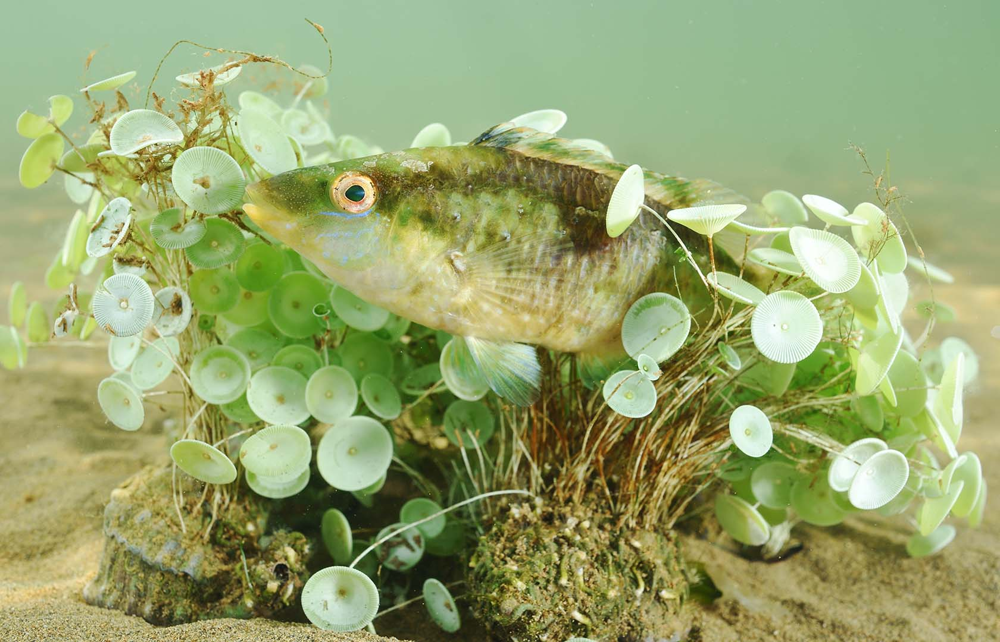

US
luis_antonio, lova, mohammed_boudaoud, sliman_hakmi .
Start
A
Aguamala, acalefo azul (Rhizostoma pulmo):
Medusa grande and near the Mar Menor. Su picadura es live.
Aguja de río, aguja de laguna (Syngnathus abaster):
Elongated fish that lives among aquatic vegetation.

Aguja mula, mula (Syngnathus typhle)
Larger pipefish, with a thick body.
B
Baila (Dicentrarchus punctatus):
Fish similar to the sea bass.
Barrena (Pholas dactylus):
Mollusk that burrows into rocks and emits light.
Bodión (Symphodus spp.):
Colorful fish of rocky bottoms.

C
Cangrejo azul(blue crab):
The blue crab is a fast swimmer and a delicious seafood delicacy.
Caracol burbuja(bubble snail):
The bubble snail has a delicate shell and glides gracefully underwater
Corácola(whelk):
The whelk is a marine snail with a spiral shell, often found in sandy and muddy seabeds

D
Dorado(mahi-mahi):
The mahi-mahi is a fast and colorful fish, popular in sport fishing
Dragoncillos de arena(sand stargazers):
Sand stargazers bury themselves in the sand to ambush prey.
E
Estrella de capitán(cookie star):
The cookie star has a firm body and is found in deep waters
Esponja de tubos(tube sponge):
Tube sponges filter water and provide shelter for marine life
Esponja de tubo púrpura (purple tube sponge):
The purple tube sponge adds vibrant color to coral reefs and serves as a habitat for small marine creatures.

F
Fartet zorilla(striped killifish):
The striped killifish is a small, resilient fish found in coastal waters
G
Gusano plano(flatworm):
Flatworms are simple organisms that can regenerate lost body parts.
Gobio de roca(rock goby):
The rock goby is often found hiding among rocks in coastal areas.
Gusano cinta(ribbon worm):
Ribbon worms have long, slender bodies and are known for their impressive hunting techniques.
H
Hidrozoo colonial(colonial hydroid):
The colonial hydroid forms intricate colonies that provide shelter for various marine organisms.
Herrera(striped seabream):
The striped seabream is a common fish in shallow coastal waters, known for its vertical stripes
L
Lenguado de Senegal(Senegalese sole):
The Senegalese sole is a flatfish that camouflages perfectly with sandy seabeds.
Lubina(sea bass):
The sea bass is a highly prized fish known for its delicate flavor and firm texture
Lenguado de arena(sand sole):
The sand sole is a flatfish that blends perfectly with the sandy ocean floor
M
Medusa cruz(cross jellyfish):
The cross jellyfish is named for the distinctive cross-shaped pattern on its bell.

Medusa huevo frito(fried egg jellyfish)
The fried egg jellyfish gets its name from its bell, which resembles a sunny-side-up egg
Medusa luna(moon jellyfish):
The moon jellyfish has a translucent bell with delicate, flowing tentacles.
N
Nassarius (nassarius snail):
The nassarius snail is known for its scavenging habits, often feeding on detritus on the ocean floor.
Nudibranquio(nudibranch):
Nudibranchs are colorful sea slugs known for their vibrant patterns and unique shapes.
Nudibranquio alderi(Alders nudibranch):
Alders nudibranch is a striking sea slug with distinctive white and orange markings on its body.

O
Opistobranquio(opisthobranch):
Opisthobranchs are a diverse group of marine gastropods known for their colorful appearances and unique anatomy.
Ostra(oyster):
Oysters are filter feeders and are highly valued for their pearls and as seafood delicacies
P
pada(prawn):
Prawns are popular in many cuisines and are known for their sweet, tender meat.
Pectinaria(ice cream cone worm)
The ice cream cone worm builds a tube shaped like a cone using sand and shell fragments
Pez araña(weever fish):
The weever fish hides in the sand and has venomous spines used for defense
R
Raspallòn(striped seabream):
The striped seabream is a common coastal fish, recognized by its silver body with dark vertical stripes.
Risoa(rissoa snail):
The rissoa snail is a tiny marine gastropod that lives among algae and rocks in shallow waters
S
Salpa(salema):
The salema porgy is a striped fish that swims in schools along rocky and seagrass-covered coasts.
Sepias(cuttlefish)
The cuttlefish is a clever cephalopod known for its ability to change color and texture instantly
Sargo(white seabream):
The white seabream is a coastal fish recognized by its silver body and vertical black bands

T
Tellina(tellin clam):
The tellin clam has a smooth, colorful shell and buries itself in sandy seabed
Tordo zorzal(mavis thrush):
The mavis thrush is known for its melodious song and is often found in wooded areas
V
Vieja,solado(parrotfish):
The parrotfish is known for its bright colors and its ability to graze on coral reefs, contributing to reef health
Z
zorro,babosa(dogfish slug):
The dogfish slug is a marine gastropod known for its unique shape and slow movement along the ocean floor.
Zorrita(foxfish):
The foxfish is a small, colorful fish that can be found in rocky coastal areas
Zorro,blénido verde(blénido verde):
The green razorfish is a slender, green fish often seen darting between rocks and algae in coastal waters
Finish
Contact
luis_antonio, lova, mohammed_boudaoud, sliman_hakmi .
Feel free to drop us a line at:
13219720@alu.murciaeduca.es